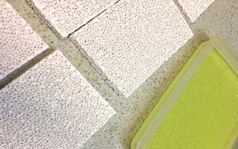

光觸媒加工(設計.合作)步驟
1. 依客戶所需(討論用途.目標價);使用環境條件,其抗菌或抗污效 除臭....等不同功能是否可行
2. 依被加工材料或元件.選用最佳之光觸媒原料及最佳節省原料之加工法,
3. 產品或模組使用光學設計,使其充份發揮其效果
4. 其它(專利.安規.效能驗證...等)
世屋光觸媒加工自2002年從日本引進台灣,已具有20年之加工技術與經驗,並榮獲政府研發補助

目前光觸媒大多運用在外牆建材與室內電子產品之附加功能,然而不管是在日本或台灣,都有許多成功案例,也也不乏失敗的例子,原因探討就是因為大家對光觸媒認知不夠深,以及對被加工材料特性不懂所造成,因日本政府投下大筆研發經費,在原材料 及特殊加工方面,目前還是以日本為技術領導者光觸媒的缺點是沒有波長388以下之光,則是無用武 地,之前雖然早已有可見光之光觸媒,但是其效果並不理想,或是其材料因為受環境因素而有慢慢衰減甚至失效因素,因此還需再克服多項技術問題光觸媒在纖維上加工在2006年前,受限於人造纖維附著度及手感度問題,但日本將0.7nm富勒希氧化衍生物成功的研發出光觸媒鍍膜劑,此法已可將產品維持到2倍的壽命,又將其技術向前跨進一步.光觸媒在外牆在建材上已經算是成熟商品包括了磁磚.鋼鋁板等建材,但施工部份需有部份作業要嚴格遵守,在後端加工(已蓋好老舊建物)之抗污處理,失敗的原因之一就是在清洗外牆時,未將肉眼看不到的油層或是洗劑處理乾淨,除此在天候考慮也是一重點.

美容商品
日本産総研以開發出假牙(義齒)浸泡美白之市售商品,除此外還有牙齒美白膏,這部份則要領有牙醫執照的才可施做,但目前已有研發使用波長400以上,可在日用市場就可購得之商品.
家電部分
前用在空氣清淨機居多,但許多商品在設計上不合理,並未將其效能顯現出來,還有許多值得努力的空間,目前另有嬰兒用消毒器.捕蚊器..等.在日光燈管也有塗佈光觸媒商品,但抗菌效果也只有在表面,對於淨化空間尚不夠作用,...(續)

可見光光觸媒之開發雖已有許多可見光材料,但都局限於某些用途,量子利用效率須提升
高活性光觸媒以2002年至2020年的發展.已有比較好的成長,其穩定度高,商品化價值高
UV LED 光觸媒:以370-380 nm ,從20年前每瓦2mw能量,10年前之20mW至今(2024)每1瓦可達600 mw之能量,展望將來到耗電量在0.1瓦能在100mW時對商品化更佳.另外在280波段目前也以有每瓦100mW能量之產生,對於將來在設計產品更佳有利
光觸媒分散/固定化技術/附著能夠更佳化讓光觸媒儲存上穩定更佳,在後段加工上能夠有更均勻化之品質
1. 依客戶所需(討論用途.目標價);使用環境條件,其抗菌或抗污效 除臭....等不同功能是否可行
2. 依被加工材料或元件.選用最佳之光觸媒原料及最佳節省原料之加工法,
3. 產品或模組使用光學設計,使其充份發揮其效果
4. 其它(專利.安規.效能驗證...等)
世屋光觸媒加工自2002年從日本引進台灣,已具有20年之加工技術與經驗,並榮獲政府研發補助